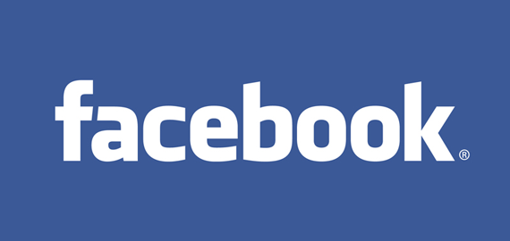
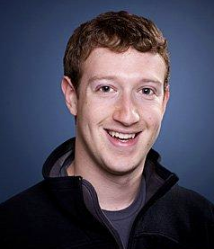

Published by: Johnny Pillacela
Facebook. One of the world’s most successful companies started by a Harvard dropout looking to connect university students and possibly the world. With the founder of Facebook, Mark Zuckerberg’s goal being to make “the world more open and connected” nobody would think that one day the United States government would be down his throat questioning him on every action on his website. As a young teenager, you might tell yourself, “nobody uses Facebook anymore” or “only old people use Facebook”. So how is it still a successful company today? Well, Facebook is a company that has acquired many other smaller companies and made them BIG!
Have you ever heard of Instagram or WhatsApp? Yea, Facebook owns them. While WhatsApp may not be popular in the United States, other foreign countries use them daily. Same thing goes for Facebook. Since Facebook owns Instagram, WhatsApp, and many other smaller companies, this means Facebook also has access to all the information of the users of each of these platforms. That is A LOT of user’s personal information. But surely Facebook keeps all of the user’s personal information private, right? Well this is the Facebook Dilemma after all.
Mark Zuckerberg; CEO of Facebook
The main thing that caught the attention of everyone who used Facebook, was its news Feed. “A seemingly endless stream of stories, pictures, news, and updates shared by friends, advertisers, and others” as stated by Frontline. The goal of the news feed is to provide you, the user, with the content on Facebook that you most want to see. It is designed to make you keep on scrolling and liking. It is one of the reasons why Facebook is worth billions of dollars today.
So how does Facebook know what to show you on your Facebook feed? This is a combination of posts that you like and an analysis of your personal information. For example, if you are a young teen, you might get more posts or ads relevant to your age or where you live.
In a more real-life example, Wael Ghonim made a Facebook page to spread the news of how the current Egyptian government was treating its civilians. His Facebook page was so popular in Egypt that in just 3 days over 100,000 people had joined his page. After months, one day, Ghonim decided to post an event on the Facebook page calling for a revolution in 10 days going to the streets and taking down Mubarak, the current president of Egypt. The event was a success as the posts reached out to many young Egyptian people and were successfully able to make Mubarak resign. The power that Facebook had to bring people together to make a president resign in amazing because it gave a voice and power to everyday people. Back in the United States, Facebook decided to be listed as a public company. This caught the attention of many people and Facebook gained billions of dollars. However, not everyone was content in the direction that Facebook was heading. Researchers working for the Department of Defense were seeing something else. Waltzman stated that, “The concern was that social media could be used for nefarious purposes. The opportunities for disinformation, for deception, for anything else are enormous. Bad guys or anybody else could use this for any kind of purpose in a way that wasn’t possible before.” Waltzman further commented on the concern of people giving up their data by saying “that they are opening themselves up to being targets for manipulation. I can manipulate you to buy something. I can manipulate you to vote for somebody.” The last statement by Waltzman is one of the reasons for the Facebook dilemma.
Facebook put a news a feature but didn’t see itself as responsible for checking the accuracy of information being posted. This should have been a red flag from the beginning. During the 2016 US presidential election many foreigners were posting fake news about the candidates on Facebook because it got attention and views to their site which made revenue for them. As long as these foreign fake news sites were getting clicks and views, they pretty much didn’t care if the information that they posted was true or not.

Many Russians were also creating fake Facebook groups and spreading disinformation to swing the election in favor of a certain candidate. However, it was only after the election that the US government and Facebook realized that many fake articles that were being put on Facebook could be traced back to Russia. Many of these articles were also being paid for by Russia.
Another big company that collected user information was Cambridge Analytica. Cambridge Analytica was using Facebook users data through 3rd party companies. For a time Facebook wasn’t aware of this but once they did they did very little to prevent this from happening.
Many Facebook executives didn’t realize the power Facebook had. They never gave it a thought and the lack of preventing misinformation from spreading within the site was enough for Facebook founder, Mark Zuckerberg, to be called for a hearing by the government. Since then Facebook has taken strides to protect user data.